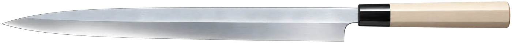
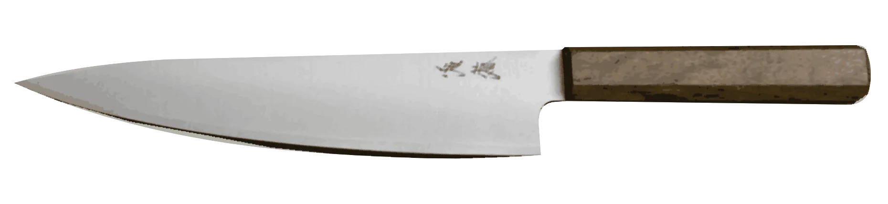
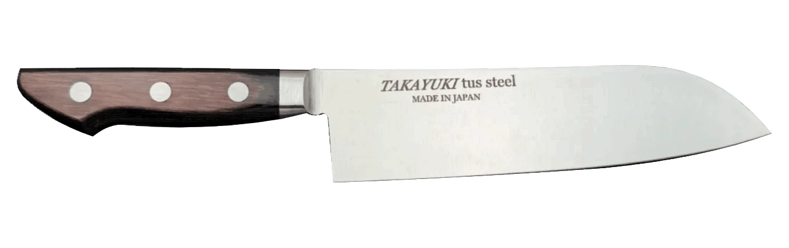
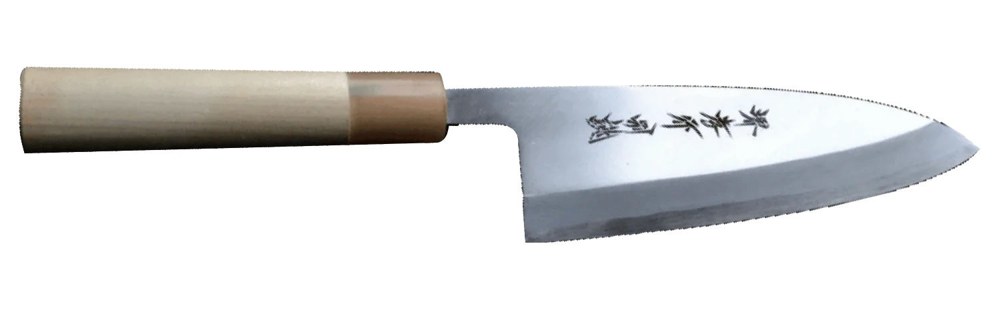
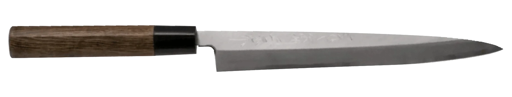
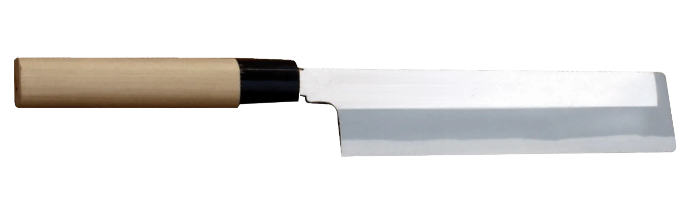

第二章 · Chapter Two
包丁の種類 — Hōchō no Shurui
Where the West asks one knife to do everything, Japan forged a blade for every task. Five knives cover the whole professional kitchen — master their differences and you will never reach for the wrong one.
First, the Vocabulary · 包丁の各部名称
Every part of a Japanese knife has a name, and the names matter — a sharpener will ask about your 切先, a maker will quote you a price per 寸 of blade. The knife below is a 柳刃 (yanagiba), the single-bevel sashimi slicer, with a magnolia wa-handle and water-buffalo horn ferrule. Tap each point to learn the part.
切先
Kissaki — the tip
The first few centimetres of the blade. Used for scoring squid, opening fish bellies, and fine tip work. On a gyuto the kissaki is fragile — never twist it, never let it strike the board point-first.
① – ⑥ Tap a numbered point

The Great Divide · 片刃と両刃
Before the five knives, one distinction rules them all: is the blade ground on one side, or both?
両刃 — Ryōba
Double bevel · 牛刀 · 三徳
ENLARGED CROSS-SECTION · 断面
Bevels on both sides meet at the cutting edge. A symmetric example is shown here; some double-bevel knives have asymmetric grinds. Gyuto and santoku are versatile choices for everyday slicing, dicing and general prep.
片刃 — Kataba
Single bevel · 出刃 · 柳刃 · 薄刃
ENLARGED CROSS-SECTION · 断面
The wide front bevel (切刃, kireha) meets the upper blade face at the しのぎ (shinogi) line. The back has a shallow hollow (裏すき, urasuki) bordered by narrow flat lands. The bevel and back meet at the cutting edge. This asymmetric geometry can steer in the cut and requires practice. Right- and left-handed versions differ.
Schematic illustrations · Thickness and hollow exaggerated for clarity · Individual knife grinds vary
Why it matters daily
Single-bevel knives sharpen differently (Chapter Six), cut differently (Chapter Five), and cost more — the urasuki must be forged, not machined. A brigade kitchen runs on double bevels; the sashimi station runs on single. Most chefs eventually own both.
How the Blade Is Built · 合わせと本焼き
Bevel is the geometry of the edge. Construction is what the blade is made of — and on this the whole Japanese knife world splits in two.
Almost every knife you will ever buy is 合わせ (awase) — laminated. A small piece of very hard, brittle edge steel (鋼, hagane) is forge-welded onto or into a body of soft, springy iron (地金, jigane). The hard steel takes the keen edge; the soft iron absorbs shock, resists warping, and is easy to sharpen. You get the best of both — at lower cost and far higher forgiveness.
The rarer, costlier 本焼き (honyaki) is the opposite: a single bar of high-carbon steel — 全鋼 (zenkō, "whole steel") — differentially water-quenched like a samurai sword. There is no soft iron to forgive a mistake. It holds an edge longer and polishes to a visible temper line (刃文, hamon), but it can crack in the quench, warps if mistreated, costs several times more, and is unforgiving to sharpen. It is the master's blade.
合わせ（付け鋼）
Laminated · the everyday blade
Awase — hagane forge-welded onto jigane
Two metals, forge-welded. The hard edge steel is supported by a tough iron body — cheaper to make, easy to sharpen, and almost impossible to ruin. This is what nearly every deba, yanagiba, and gyuto is.
本焼き（全鋼）
Mono-steel · the master's blade
Honyaki — one bar of hardened steel
One steel, hardened throughout — no soft body to lean on. Longer edge retention and a visible 刃文 (hamon), but it warps, can crack in the quench, and forgives nothing. Priced for the chef who has earned it.
Within awase, three forge-welding patterns cover almost every knife made. The first two are for double-bevel (もろ刃) blades; the last is the classic single-bevel (片刃) construction.
三枚打ち
Sanmai-uchi
もろ刃 · Double bevel
Hard steel core sandwiched between two layers of soft iron — "three-sheet" forging. The most common everyday construction.
割り込み
Warikomi
もろ刃 · Double bevel
The iron is split and the hard steel driven into the cleft, fully wrapped except at the edge. A tougher, well-protected core.
付け鋼
Tsukehagane
片刃 · Single bevel
Hard steel welded to one face only — the construction behind the single-bevel deba, yanagiba, and usuba.
The Essential Five · 基本の五本
Two double-bevel generalists, three single-bevel specialists. Together they cover meat, fish, and vegetables from rough prep to final presentation.

The workhorse of the professional kitchen — Japan's answer to the French chef's knife, but thinner, lighter, and ground to a far keener edge. The gentle belly allows a rocking cut, yet the profile stays flat enough for the push-cut that dominates Japanese technique. If you own one Japanese knife, it is this one.
Sizing is about your station, not your hand: 210 mm for a crowded line, 240 mm as the all-round professional standard, 270 mm for butchery and volume prep. A longer blade cuts with fewer strokes — fewer strokes, cleaner food.
In steel: gyuto exist in every steel in Chapter Three. 青紙 or 白紙 for the sharpening devotee; VG-10 or SG2 for the working line.

Named for its three virtues — equally at home on meat, fish, and vegetables. Shorter and flatter than the gyuto, with a dropped sheep's-foot tip that keeps the point safely out of the way. The flat profile makes full board contact on every stroke, which is why it excels at straight up-and-down tap-chopping.
In professional settings the santoku is the prep-station sprinter: garlic, herbs, shallots, mushrooms — high-repetition small work where its agility beats the gyuto's reach. Often ground with Granton (hollow) dimples to release sticky slices.
For staff training it is the safest first knife: short, controllable, forgiving geometry.

A specialist built for one job done perfectly: breaking down whole fish. The spine is dramatically thick — up to 9 mm at the handle — giving the blade the mass to sever collarbones and fish heads with a controlled chop from the heel, while the keen single-bevel edge near the tip glides along the spine frame to lift fillets without tearing.
The cardinal rule: the deba chops through fish bone with the heel using controlled weight — it is never twisted, and it is not a cleaver for poultry or meat bones, which will chip the hard edge. A skilled 板前 breaks down a whole snapper in under two minutes — sanmai-oroshi, three clean pieces.
Sizing: match the fish — 105–135 mm for aji and mackerel, 165–180 mm as the standard, 210 mm for salmon and large snapper.

The signature blade of the sushi counter — long, narrow, and willow-leaf slender. Its single-bevel edge and mirror-polished 裏 (back face) part the flesh of raw fish with almost no cell damage, which is the entire point: a cleanly cut surface reflects light, holds its sheen, and tastes different. A sawed cut turns sashimi dull and weeping.
The stroke is everything: place the heel at the far corner of the block and draw the full length of the blade through in one long pull — 引き切り (hikigiri) — never push, never saw. Length matters because a 300 mm blade finishes a block of maguro in a single stroke.
The photo at the front of this guide is a yanagiba resting on its kiri-wood box — the classic presentation of a Sakai-forged blade.

The vegetable knife of the washoku specialist. Unlike the home-kitchen nakiri, the usuba is single-bevel — the flat back face can be laid against the work, which is what makes 桂剥き (katsuramuki) possible: rotating a daikon against the stationary edge to peel a continuous, translucent sheet thinner than paper.
Edge geometry this thin is honest about your technique. The blade chips if twisted, wedges if forced, and rewards a relaxed grip with cuts so clean that vegetable surfaces stay bright for hours — the visible difference in a kaiseki tsuma garnish.
Two regional shapes: the square-tipped 江戸型 (Edo/Kanto) and the rounded sickle-tip 鎌型 (Kamagata/Kansai). Function is identical; lineage is not.
Beyond the Five · その他の包丁
The five cover everything — but four more blades earn their place in specific kitchens. Meet them in the Buying Guide when your menu calls.
菜切り
Nakiri
The usuba's double-bevel sibling — all the flat-blade vegetable speed, none of the single-bevel learning curve.
筋引き
Sujihiki
The "sinew puller" — a long, narrow double-bevel slicer for roasts, cured fish, and portioning proteins.
ペティ
Petty
120–150 mm utility knife for in-hand work: shallots, fruit, silver skin, garnish. The gyuto's pocket-sized partner.
骨スキ
Honesuki
The triangular poultry boner — stiff, pointed, made to ride along joints and cartilage, never through bone.